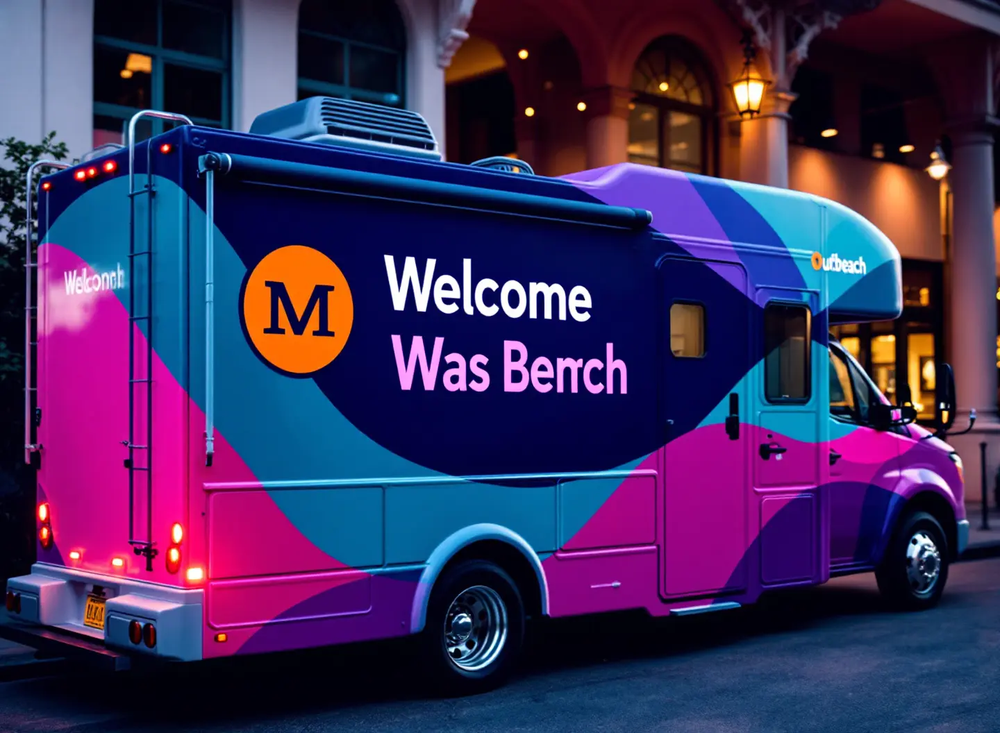
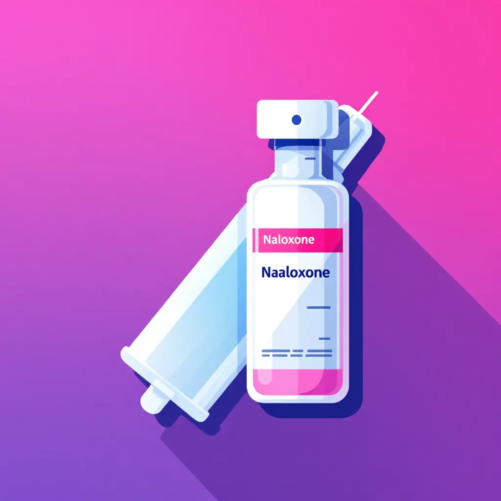
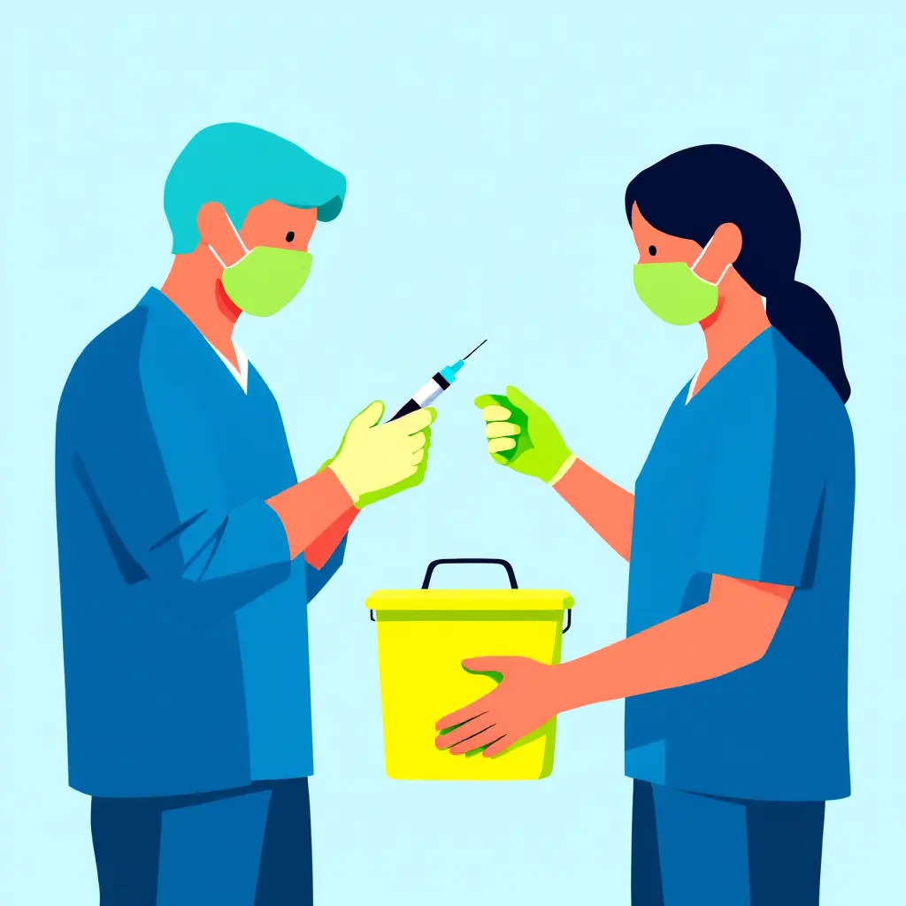
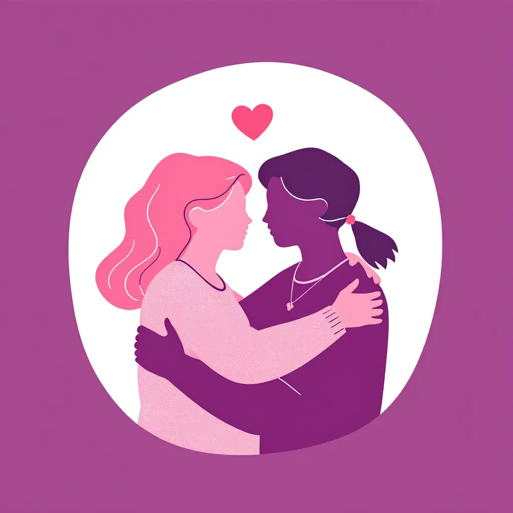
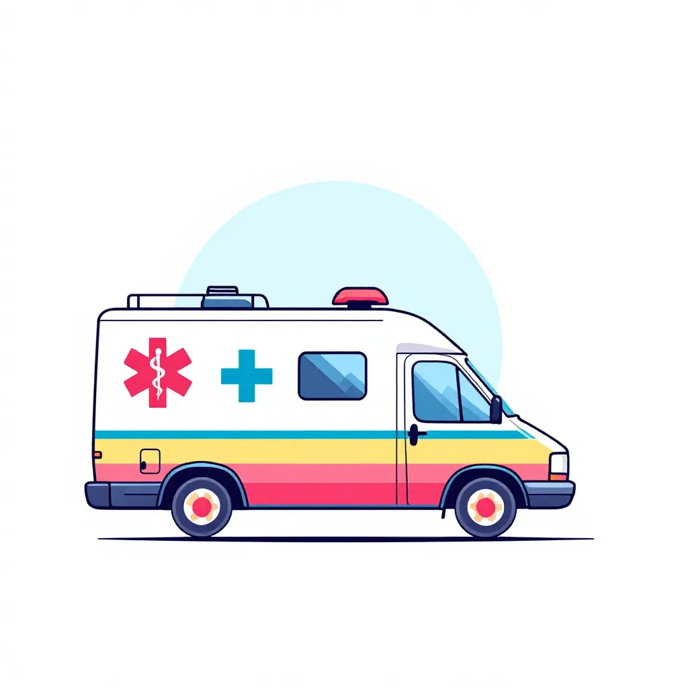
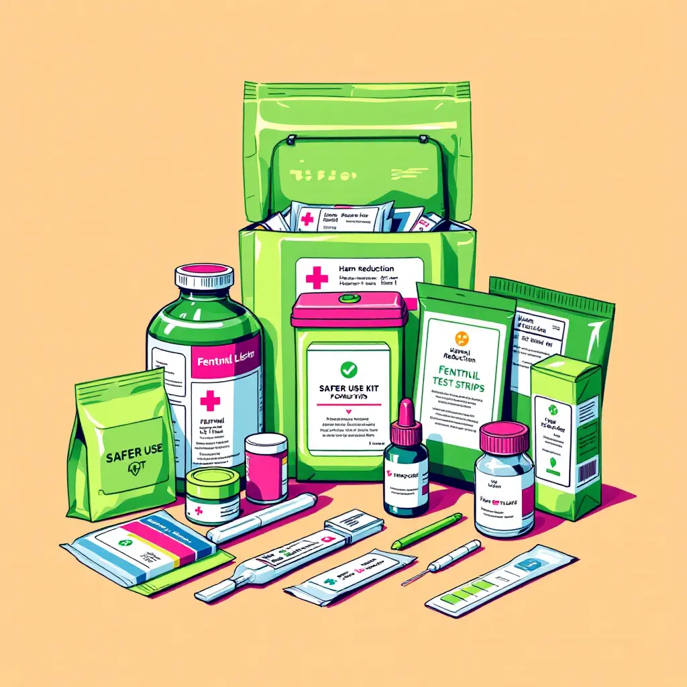
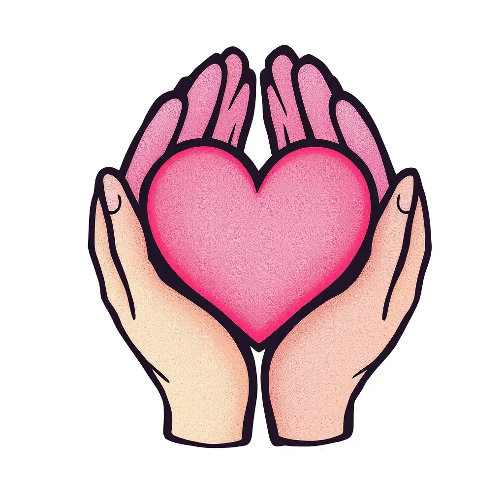

HROC Image Library
Professional AI-Generated Images for Website
56 Total Images
5 Categories
High Resolution
Brand Aligned
Magenta Pink
Bright Cyan
Lime Green
Deep Plum
Heart Pink
Hero/Banner Images
7 large hero images (1920x1080) for page headers and featured content

hero_01_mobile_outreach_vehicle.webp
HROC mobile outreach vehicle providing community services
Homepage hero banner
hero_02_community_engagement.webp
Community members engaging with HROC healthcare services
About page hero
hero_03_peer_support.webp
Peer counselor providing compassionate support
Services page hero
hero_04_naloxone_training.webp
Community naloxone training and education session
Training page hero
hero_05_hands_holding.webp
Hands joined in solidarity and support
Donate page hero
hero_06_pacific_northwest_landscape.webp
Pacific Northwest landscape representing HROC service area
Contact page hero
hero_07_community_circle.webp
Community gathering in traditional talking circle formation
Programs page hero
Service Icons
12 service icons (1024x1024) for services grids and feature highlights

icon_01_naloxone_kit.webp
Naloxone distribution service icon
Services grid icon

icon_02_syringe_exchange.webp
Syringe exchange program icon
Services grid icon

icon_03_peer_support.webp
Peer support services icon
Services grid icon
icon_04_healthcare_navigation.webp
Healthcare navigation services icon
Services grid icon

icon_05_mobile_outreach.webp
Mobile outreach services icon
Services grid icon
icon_06_education_training.webp
Education and training programs icon
Services grid icon

icon_07_harm_reduction_supplies.webp
Harm reduction supplies icon
Services grid icon
icon_08_crisis_support.webp
Crisis support and hotline icon
Services grid icon
icon_09_cultural_competency.webp
Culturally competent care icon
Services grid icon
icon_10_community_resources.webp
Community resources and connections icon
Services grid icon

icon_11_safe_space.webp
Safe and welcoming space icon
Services grid icon
icon_12_wellness_check.webp
Wellness checks and health monitoring icon
Services grid icon